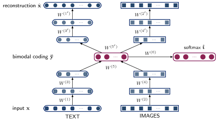
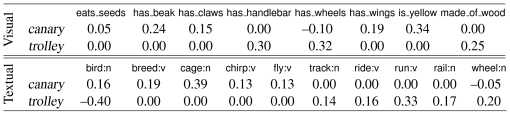

Learning Grounded Meaning Representations with Autoencoders
Institute for Language, Cognition and Computation
School of Informatics, University of Edinburgh
10 Crichton Street, Edinburgh EH8 9AB
c.silberer@ed.ac.uk, mlap@inf.ed.ac.uk
Abstract
In this paper we address the problem of grounding distributional representations of lexical meaning. We introduce a new model which uses stacked autoencoders to learn higher-level embeddings from textual and visual input. The two modalities are encoded as vectors of attributes and are obtained automatically from text and images, respectively. We evaluate our model on its ability to simulate similarity judgments and concept categorization. On both tasks, our approach outperforms baselines and related models.
1 Introduction
Recent years have seen a surge of interest in single word vector spaces () and their successful use in many natural language applications. Examples include information retrieval (), search query expansions (), document classification (), and question answering (). Vector spaces have been also popular in cognitive science figuring prominently in simulations of human behavior involving semantic priming, deep dyslexia, text comprehension, synonym selection, and similarity judgments (see ). In general, these models specify mechanisms for constructing semantic representations from text corpora based on the distributional hypothesis (): words that appear in similar linguistic contexts are likely to have related meanings.
Word meaning, however, is also tied to the physical world. Words are grounded in the external environment and relate to sensorimotor experience (). To account for this, new types of perceptually grounded distributional models have emerged. These models learn the meaning of words based on textual and perceptual input. The latter is approximated by feature norms elicited from humans (), visual information extracted automatically from images, () or a combination of both (). Despite differences in formulation, most existing models conceptualize the problem of meaning representation as one of learning from multiple views corresponding to different modalities. These models still represent words as vectors resulting from the combination of representations with different statistical properties that do not necessarily have a natural correspondence (e.g., text and images).
In this work, we introduce a model, illustrated in Figure 1, which learns grounded meaning representations by mapping words and images into a common embedding space. Our model uses stacked autoencoders () to induce semantic representations integrating visual and textual information. The literature describes several successful approaches to multimodal learning using different variants of deep networks () and data sources including text, images, audio, and video. Unlike most previous work, our model is defined at a finer level of granularity — it computes meaning representations for individual words and is unique in its use of attributes as a means of representing the textual and visual modalities. We follow in arguing that an attribute-centric representation is expedient for several reasons.
Firstly, attributes provide a natural way of expressing salient properties of word meaning as demonstrated in norming studies (e.g., ) where humans often employ attributes when asked to describe a concept. Secondly, from a modeling perspective, attributes allow for easier integration of different modalities, since these are rendered in the same medium, namely, language. Thirdly, attributes are well-suited to describing visual phenomena (e.g., objects, scenes, actions). They allow to generalize to new instances for which there are no training examples available and to transcend category and task boundaries whilst offering a generic description of visual data ().
Our model learns multimodal representations from attributes which are automatically inferred from text and images. We evaluate the embeddings it produces on two tasks, namely word similarity and categorization. In the first task, model estimates of word similarity (e.g., gem–jewel are similar but glass–magician are not) are compared against elicited similarity ratings. We performed a large-scale evaluation on a new dataset consisting of human similarity judgments for 7,576 word pairs. Unlike previous efforts such as the widely used WordSim353 collection (), our dataset contains ratings for visual and textual similarity, thus allowing to study the two modalities (and their contribution to meaning representation) together and in isolation. We also assess whether the learnt representations are appropriate for categorization, i.e., grouping a set of objects into meaningful semantic categories (e.g., peach and apple are members of fruit, whereas chair and table are furniture). On both tasks, our model outperforms baselines and related models.
2 Related Work
The presented model has connections to several lines of work in NLP, computer vision research, and more generally multimodal learning. We review related work in these areas below.
Grounded Semantic Spaces
Grounded semantic spaces are essentially distributional models augmented with perceptual information. A model akin to Latent Semantic Analysis () is proposed in who concatenate two independently constructed textual and visual spaces and subsequently project them onto a lower-dimensional space using Singular Value Decomposition.
Several other models have been extensions of Latent Dirichlet Allocation () where topic distributions are learned from words and other perceptual units. use visual words which they extract from a corpus of multimodal documents (i.e., BBC news articles and their associated images), whereas others () use feature norms obtained in longitudinal elicitation studies (see for an example) as an approximation of the visual environment. More recently, topic models which combine both feature norms and visual words have also been introduced (). Drawing inspiration from the successful application of attribute classifiers in object recognition, show that automatically predicted visual attributes act as substitutes for feature norms without any critical information loss.
The visual and textual modalities on which our model is trained are decoupled in that they are not derived from the same corpus (we would expect co-occurring images and text to correlate to some extent) but unified in their representation by natural language attributes. The use of stacked autoencoders to extract a shared lexical meaning representation is new to our knowledge, although, as we explain below related to a large body of work on deep learning.
Multimodal Deep Learning
Our work employs deep learning (a.k.a deep networks) to project linguistic and visual information onto a unified representation that fuses the two modalities together. The goal of deep learning is to learn multiple levels of representations through a hierarchy of network architectures, where higher-level representations are expected to help define higher-level concepts.
A large body of work has focused on projecting words and images into a common space using a variety of deep learning methods ranging from deep and restricted Boltzman machines (), to autoencoders (), and recursive neural networks (). Similar methods have been employed to combine other modalities such as speech and video () or images (). Although our model is conceptually similar to these studies (especially those applying stacked autoencoders), it differs considerably from them in at least two aspects. Firstly, most of these approaches aim to learn a shared representation between modalities so as to infer some missing modality from others (e.g., to infer text from images and vice versa); in contrast, we aim to learn an optimal representation for each modality and their optimal combination. Secondly, our problem setting is different from the former studies, which usually deal with classification tasks and fine-tune the deep neural networks using training data with explicit class labels; in contrast we fine-tune our autoencoders using a semi-supervised criterion. That is, we use indirect supervision in the form of object classification in addition to the objective of reconstructing the attribute-centric input representation.
3 Autoencoders for Grounded Semantics
3.1 Background
Our model learns higher-level meaning representations for single words from textual and visual input in a joint fashion. We first briefly review autoencoders in Section 3.1 with emphasis on aspects relevant to our model which we then describe in Section 3.2.
Autoencoders
An autoencoder is an unsupervised neural network which is trained to reconstruct a given input from its latent representation (). It consists of an encoder which maps an input vector to a latent representation , with being a non-linear activation function, such as a sigmoid function. A decoder then aims to reconstruct input from , i.e., . The training objective is the determination of parameters and that minimize the average reconstruction error over a set of input vectors :
| (1) |
where is a loss function, such as cross-entropy. Parameters and can be optimized by gradient descent methods.
Autoencoders are a means to learn representations of some input by retaining useful features in the encoding phase which help to reconstruct the input, whilst discarding useless or noisy ones. To this end, different strategies have been employed to guide parameter learning and constrain the hidden representation. Examples include imposing a bottleneck to produce an under-complete representation of the input, using sparse representations, or denoising.
Denoising Autoencoders
The training criterion with denoising autoencoders is the reconstruction of clean input given a corrupted version (). The underlying idea is that the learned latent representation is good if the autoencoder is capable of reconstructing the actual input from its corruption. The reconstruction error for an input with loss function then is:
| (2) |
One possible corruption process is masking noise, where the corrupted version results from randomly setting a fraction of to 0.
Stacked Autoencoders
Several (denoising) autoencoders can be used as building blocks to form a deep neural network (). For that purpose, the autoencoders are pre-trained layer by layer, with the current layer being fed the latent representation of the previous autoencoder as input. Using this unsupervised pre-training procedure, initial parameters are found which approximate a good solution. Subsequently, the original input layer and hidden representations of all the autoencoders are stacked and all network parameters are fine-tuned with backpropagation.
To further optimize the parameters of the network, a supervised criterion can be imposed on top of the last hidden layer such as the minimization of a prediction error on a supervised task (). Another approach is to unfold the stacked autoencoders and fine-tune them with respect to the minimization of the global reconstruction error (). Alternatively, a semi-supervised criterion can be used () through combination of the unsupervised training criterion (global reconstruction) with a supervised criterion (prediction of some target given the latent representation).
3.2 Semantic Representations

To learn meaning representations of single words from textual and visual input, we employ stacked (denoising) autoencoders (SAEs). Both input modalities are vector-based representations of words, or, more precisely, the objects they refer to (e.g., canary, trolley). The vector dimensions correspond to textual and visual attributes, examples of which are shown in Figure 2. We explain how these representations are obtained in more detail in Section 4.1. We first train SAEs with two hidden layers (codings) for each modality separately. Then, we join these two SAEs by feeding their respective second coding simultaneously to another autoencoder, whose hidden layer thus yields the fused meaning representation. Finally, we stack all layers and unfold them in order to fine-tune the SAE. Figure 1 illustrates the model.
Unimodal Autoencoders
For both modalities, we use the hyperbolic tangent function as activation function for encoder and decoder and an entropic loss function for . The weights of each autoencoder are tied, i.e., . We employ denoising autoencoders (DAEs) for pre-training the textual modality. Regarding the visual autoencoder, we derive a new (‘denoised’) target vector to be reconstructed for each input vector , and treat itself as corrupted input. The unimodal autoencoder is thus trained to denoise a given input. The target vector is derived as follows: each object in our data is represented by multiple images, and each image is in turn represented by a visual attribute vector . The target vector is the sum of and the centroid of the remaining attribute vectors representing object .
Bimodal Autoencoder
The bimodal autoencoder is fed with the concatenated final hidden codings of the visual and textual modalities as input and maps these inputs to a joint hidden layer with units. We normalize both unimodal input codings to unit length. Again, we use tied weights for the bimodal autoencoder. We also encourage the autoencoder to detect dependencies between the two modalities while learning the mapping to the bimodal hidden layer. We therefore apply masking noise to one modality with a masking factor (see Section 3.1), so that the corrupted modality optimally has to rely on the other modality in order to reconstruct its missing input features.
Stacked Bimodal Autoencoder
We finally build a stacked bimodal autoencoder (SAE) with all pre-trained layers and fine-tune them with respect to a semi-supervised criterion. That is, we unfold the stacked autoencoder and furthermore add a softmax output layer on top of the bimodal layer that outputs predictions with respect to the inputs’ object labels (e.g., boat):
| (3) |
with weights , , where is the number of unique object labels. The overall objective to be minimized is therefore the weighted sum of the reconstruction error and the classification error :
| (4) |
where and are weighting parameters that give different importance to the partial objectives, and are entropic loss functions, and is a regularization term with . Finally, is the object label vector predicted by the softmax layer for input vector , and is the correct object label, represented as a -dimensional one-hot vector11In a one-hot vector, the element corresponding to the object label is one and the others are zero..
The additional supervised criterion drives the learning towards a representation capable of discriminating between different objects. Furthermore, the semi-supervised setting affords flexibility, allowing to adapt the architecture to specific tasks. For example, by setting the corruption parameter for the textual modality to one and to zero, a standard object classification model for images can be trained. Setting close to one for either modality enables the model to infer the other (missing) modality. As our input consists of natural language attributes, the model would infer textual attributes given visual attributes and vice versa.

4 Experimental Setup
In this section we present our experimental setup for assessing the performance of our model. We give details on the tasks and datasets used for evaluation, we explain how the textual and visual inputs were constructed, how the SAE model was trained, and describe the approaches used for comparison with our own work.
4.1 Data
We learn meaning representations for the nouns contained in McRae et al.’s () feature norms. These are 541 concrete animate and inanimate objects (e.g., animals, clothing, vehicles, utensils, fruits, and vegetables). The norms were elicited by asking participants to list properties (e.g., barks, an_animal, has_legs) describing the nouns they were presented with.
As shown in Figure 1, our model takes as input two (real-valued) vectors representing the visual and textual modalities. Vector dimensions correspond to textual and visual attributes, respectively. Textual attributes were extracted by running Strudel () on a 2009 dump of the English Wikipedia.22The corpus is downloadable from http://wacky.sslmit.unibo.it/doku.php?id=corpora. Strudel is a fully automatic method for extracting weighted word-attribute pairs (e.g., bat–species:n, bat–bite:v) from a lemmatized and POS-tagged corpus. Weights are log-likelihood ratio scores expressing how strongly an attribute and a word are associated. We only retained the ten highest scored attributes for each target word. This returned a total of 2,362 dimensions for the textual vectors. Association scores were scaled to the range.
To obtain visual vectors, we followed the methodology put forward in . Specifically, we used an updated version of their dataset to train SVM-based attribute classifiers that predict visual attributes for images (). The dataset is a taxonomy of 636 visual attributes (e.g., has_wings, made_of_wood) and nearly 700K images from ImageNet () describing more than 500 of McRae et al.’s () nouns. The classifiers perform reasonably well with an interpolated average precision of 0.52. We only considered attributes assigned to at least two nouns in the dataset, obtaining a 414 dimensional vector for each noun. Analogously to the textual representations, visual vectors were scaled to the range.
We follow Silberer et al.’s () partition of the dataset into training, validation, and test set and acquire visual vectors for each of the sets. We use the visual vectors of the training and development set for training the autoencoders, and the vectors for the test set for evaluation.
4.2 Model Architecture
Model parameters were optimized on a subset of the word association norms collected by .33http://w3.usf.edu/Freeassociation. These were established by presenting participants with a cue word (e.g., canary) and asking them to name an associate word in response (e.g., bird, sing, yellow). For each cue, the norms provide a set of associates and the frequencies with which they were named. The dataset contains a very large number of cue-associate pairs (63,619 in total) some of which luckily are covered in .44435 word pairs constitute the overlap between Nelson et al.’s norms () and McRae et al.’s () nouns. During training we used correlation analysis (Spearman’s ) to monitor the degree of linear relationship between model cue-associate (cosine) similarities and human probabilities.
The best autoencoder on the word association task obtained a correlation coefficient of 0.33. This performance is superior to the results reported in (their correlation coefficients range from 0.16 to 0.28). This model has the following architecture: the textual autoencoder (see Figure 1, left-hand side) consists of 700 hidden units which are then mapped to the second hidden layer with 500 units (the corruption parameter was set to ); the visual autoencoder (see Figure 1, right-hand side) has 170 and 100 hidden units, in the first and second layer, respectively. The 500 textual and 100 visual hidden units were fed to a bimodal autoencoder containing 500 latent units, and masking noise was applied to the textual modality with . The weighting parameters for the joint training objective of the stacked autoencoder were set to and (see Equation (4)).
We used the model described above and the meaning representations obtained from the output of the bimodal latent layer for all the evaluation tasks detailed below. Some performance gains could be expected if parameter optimization took place separately for each task. However, we wanted to avoid overfitting, and show that our parameters are robust across tasks and datasets.
4.3 Evaluation Tasks
Word Similarity
We first evaluated how well our model predicts word similarity ratings. Although several relevant datasets exist, such as the widely used WordSim353 () or the more recent Rel-122 norms (), they contain many abstract words, (e.g., love–sex or arrest–detention) which are not covered in . This is for a good reason, as most abstract words do not have discernible attributes, or at least attributes that participants would agree upon. We thus created a new dataset consisting exclusively of nouns which we hope will be useful for the development and evaluation of grounded semantic space models.55Available from http://homepages.inf.ed.ac.uk/mlap/index.php?page=resources.
Initially, we created all possible pairings over McRae et al.’s () nouns and computed their semantic relatedness using ’s WordNet-based measure. We opted for this specific measure as it achieves high correlation with human ratings and has a high coverage on our nouns. Next, for each word we randomly selected 30 pairs under the assumption that they are representative of the full variation of semantic similarity. This resulted in 7,576 word pairs for which we obtained similarity ratings using Amazon Mechanical Turk (AMT). Participants were asked to rate a pair on two dimensions, visual and semantic similarity using a Likert scale of 1 (highly dissimilar) to 5 (highly similar). Each task consisted of 32 pairs covering examples of weak to very strong semantic relatedness. Two control pairs from were included in each task to potentially help identify and eliminate data from participants who assigned random scores. Examples of the stimuli and mean ratings are shown in Table 1.
| Word Pairs | Semantic | Visual |
|---|---|---|
| football–pillow | 1.0 | 1.2 |
| dagger–pencil | 1.0 | 2.2 |
| motorcycle–wheel | 2.4 | 1.8 |
| orange–pumpkin | 2.5 | 3.0 |
| cherry–pineapple | 3.6 | 1.2 |
| pickle–zucchini | 3.6 | 4.0 |
| canary–owl | 4.0 | 2.4 |
| jeans–sweater | 4.5 | 2.2 |
| pan–pot | 4.7 | 4.0 |
| hornet–wasp | 4.8 | 4.8 |
| airplane–jet | 5.0 | 5.0 |
The elicitation study comprised overall 255 tasks, each task was completed by five volunteers. The similarity data was post-processed so as to identify and remove outliers. We considered an outlier to be any individual whose mean pairwise correlation fell outside two standard deviations from the mean correlation. 11.5% of the annotations were detected as outliers and removed. After outlier removal, we further examined how well the participants agreed in their similarity judgments. We measured inter-subject agreement as the average pairwise correlation coefficient (Spearman’s ) between the ratings of all annotators for each task. For semantic similarity, the mean correlation was 0.76 (Min 0.34, Max 0.97, StD 0.11) and for visual similarity 0.63 (Min 0.19, Max 0.90, SD 0.14). These results indicate that the participants found the task relatively straightforward and produced similarity ratings with a reasonable level of consistency. For comparison, Patwardhan and Pedersen’s () measure achieved a coefficient of on the dataset for semantic similarity and for visual similarity. The correlation between the average ratings of the AMT annotators and the Miller and Charles (1991) dataset was . In our experiments (see Section 5), we correlate model-based cosine similarities with mean similarity ratings (again using Spearman’s ).
Categorization
The task of categorization (i.e., grouping objects into meaningful categories) is a classic problem in the field of cognitive science, central to perception, learning, and the use of language. We evaluated model output against a gold standard set of categories created by . The dataset contains a classification, produced by human participants, of McRae et al.’s () nouns into (possibly multiple) semantic categories (40 in total).66The dataset can be downloaded from http://homepages.inf.ed.ac.uk/s0897549/data/.
To obtain a clustering of nouns, we used Chinese Whispers (), a randomized graph-clustering algorithm. In the categorization setting, Chinese Whispers (CW) produces a hard clustering over a weighted graph whose nodes correspond to words and edges to cosine similarity scores between vectors representing their meaning. CW is a non-parametric model, it induces the number of clusters (i.e., categories) from the data as well as which nouns belong to these clusters. In our experiments, we initialized Chinese Whispers with different graphs resulting from different vector-based representations of the nouns. We also transformed the dataset into hard categorizations by assigning each noun to its most typical category as extrapolated from human typicality ratings (for details see ). CW can optionally apply a minimum weight threshold which we optimized using the categorization dataset from . The latter contains a classification of 82 nouns into 10 categories. These nouns were excluded from the gold standard () in our final evaluation.
We evaluated the clusters produced by CW using the F-score measure introduced in the SemEval 2007 task (); it is the harmonic mean of precision and recall defined as the number of correct members of a cluster divided by the number of items in the cluster and the number of items in the gold-standard class, respectively.
4.4 Comparison with Other Models
Throughout our experiments we compare a bimodal stacked autoencoder against unimodal autoencoders based solely on textual and visual input (left- and right-hand sides in Figure 1, respectively). We also compare our model against two approaches that differ in their fusion mechanisms. The first one is based on kernelized canonical correlation (kCCA, ) with a linear kernel which was the best performing model in . The second one emulates Bruni et al.’s () fusion mechanism. Specifically, we concatenate the textual and visual vectors and project them onto a lower dimensional latent space using SVD (). All these models run on the same datasets/items and are given input identical to our model, namely attribute-based textual and visual representations.
We furthermore report results obtained with Bruni et al.’s () bimodal distributional model, which employs SVD to integrate co-occurrence-based textual representations with visual representations constructed from low-level image features. In their model, the textual modality is represented by the 30K-dimensional vectors extracted from UKWaC and WaCkypedia.77We thank Elia Bruni for providing us with their data. The visual modality is represented by bag-of-visual-words histograms built on the basis of clustered SIFT features (). We rebuilt their model on the ESP image dataset () using Bruni et al.’s () publicly available system.
Finally, we also compare to the word embeddings obtained using Mikolov et al.’s () recurrent neural network based language model. These were pre-trained on Broadcast news data (400M words) using the word2vec tool.88Available from http://www.rnnlm.org/. We report results with the 640-dimensional embeddings as they performed best.
5 Results
| Semantic | Visual | |||||
|---|---|---|---|---|---|---|
| Models | T | V | T+V | T | V | T+V |
| McRae | 0.71 | 0.49 | 0.68 | 0.58 | 0.52 | 0.62 |
| Attributes | 0.58 | 0.61 | 0.68 | 0.46 | 0.56 | 0.58 |
| SAE | 0.65 | 0.60 | 0.70 | 0.52 | 0.60 | 0.64 |
| SVD | — | — | 0.67 | — | — | 0.57 |
| kCCA | — | — | 0.57 | — | — | 0.55 |
| Bruni | — | — | 0.52 | — | — | 0.46 |
| RNN-640 | 0.41 | — | — | 0.34 | — | — |
Table 2 presents our results on the word similarity task. We report correlation coefficients of model predictions against similarity ratings. As an indicator to how well automatically extracted attributes can approach the performance of clean human generated attributes, we also report results of a distributional model induced from McRae et al.’s () norms (see the row labeled McRae in the table). Each noun is represented as a vector with dimensions corresponding to attributes elicited by participants of the norming study. Vector components are set to the (normalized) frequency with which participants generated the corresponding attribute. We show results for three models, using all attributes except those classified as visual (T), only visual attributes (V), and all available attributes (V+T).99Classification of attributes into categories is provided by in their dataset. As baselines, we also report the performance of a model based solely on textual attributes (which we obtain from Strudel), visual attributes (obtained from our classifiers), and their concatenation (see row Attributes in Table 2, and columns T, V, and T+V, respectively). The automatically obtained textual and visual attribute vectors serve as input to SVD, kCCA, and our stacked autoencoder (SAE). The third row in the table presents three variants of our model trained on textual and visual attributes only (T and V, respectively) and on both modalities jointly (T+V).
Recall that participants were asked to provide ratings on two dimensions, namely semantic and visual similarity. We would expect the textual modality to be more dominant when modeling semantic similarity and conversely the perceptual modality to be stronger with respect to visual similarity. This is borne out in our unimodal SAEs. The textual SAE correlates better with semantic similarity judgments ( = 0.65) than its visual equivalent ( = 0.60). And the visual SAE correlates better with visual similarity judgments ( = 0.60) compared to the textual SAE ( = 0.52). Interestingly, the bimodal SAE is better than the unimodal variants on both types of similarity judgments, semantic and visual. This suggests that both modalities contribute complementary information and that the SAE model is able to extract a shared representation which improves generalization performance across tasks by learning them jointly. The bimodal autoencoder (SAE, T+V) outperforms all other bimodal models on both similarity tasks. It yields a correlation coefficient of = 0.70 on semantic similarity and = 0.64 on visual similarity. Human agreement on the former task is 0.76 and 0.63 on the latter. Table 3 shows examples of word pairs with highest semantic and visual similarity according to the SAE model.
| # | Pair | # | Pair |
|---|---|---|---|
| 1 | pliers–tongs | 11 | cello–violin |
| 2 | cathedral–church | 12 | cottage–house |
| 3 | cathedral–chapel | 13 | horse–pony |
| 4 | pistol–revolver | 14 | gun–rifle |
| 5 | chapel–church | 15 | cedar–oak |
| 6 | airplane–helicopter | 16 | bull–ox |
| 7 | dagger–sword | 17 | dress–gown |
| 8 | pistol–rifle | 18 | bolts–screws |
| 9 | cloak–robe | 19 | salmon–trout |
| 10 | nylons–trousers | 20 | oven–stove |
We also observe that simply concatenating textual and visual attributes (Attributes, T+V) performs competitively with SVD and better than kCCA. This indicates that the attribute-based representation is a powerful predictor on its own. Interestingly, both () and () which do not make use of attributes are out-performed by all other attribute-based systems (see columns T and T+V in Table 2).
| Models | T | V | T+V |
|---|---|---|---|
| McRae | 0.52 | 0.31 | 0.42 |
| Attributes | 0.35 | 0.37 | 0.33 |
| SAE | 0.36 | 0.35 | 0.43 |
| SVD | — | — | 0.39 |
| kCCA | — | — | 0.37 |
| Bruni | — | — | 0.34 |
| RNN-640 | 0.32 | — | — |
Our results on the categorization task are given in Table 4. In this task, simple concatenation of visual and textual attributes does not yield improved performance over the individual modalities (see row Attributes in Table 4). In contrast, all bimodal models (SVD, kCCA, and SAE) are better than their unimodal equivalents and RNN-640. The SAE outperforms both kCCA and SVD by a large margin delivering clustering performance similar to the McRae et al.’s () norms. Table 5 shows examples of clusters produced by Chinese Whispers when using vector representations provided by the SAE model.
| stick-like utensils | baton, ladle, peg, spatula, spoon |
|---|---|
| religious buildings | cathedral, chapel, church |
| wind instruments | clarinet, flute, saxophone, trombone, trumpet, tuba |
| axes | axe, hatchet, machete, tomahawk |
| furniture w/ legs | bed, bench, chair, couch, desk, rocker, sofa, stool, table |
| furniture w/o legs | bookcase, bureau, cabinet, closet, cupboard, dishwasher, dresser |
| lightings | candle, chandelier, lamp, lantern |
| entry points | door, elevator, gate |
| ungulates | bison, buffalo, bull, calf, camel, cow, donkey, elephant, goat, horse, |
| lamb, ox, pig, pony, sheep | |
| birds | crow, dove, eagle, falcon, hawk, ostrich, owl, penguin, pigeon, |
| raven, stork, vulture, woodpecker |
In sum, our experiments show that the bimodal SAE model delivers superior performance across the board when compared against competitive baselines and related models. It is interesting to note that the unimodal SAEs are in most cases better than the raw textual or visual attributes. This indicates that higher level embeddings may be beneficial to NLP tasks in general, not only to those requiring multimodal information.
6 Conclusions
In this paper, we presented a model that uses stacked autoencoders to learn grounded meaning representations by simultaneously combining textual and visual modalities. The two modalities are encoded as vectors of natural language attributes and are obtained automatically from decoupled text and image data. To the best of our knowledge, our model is novel in its use of attribute-based input in a deep neural network. Experimental results in two tasks, namely simulation of word similarity and word categorization, show that our model outperforms competitive baselines and related models trained on the same attribute-based input. Our evaluation also reveals that the bimodal models are superior to their unimodal counterparts and that higher-level unimodal representations are better than the raw input. In the future, we would like to apply our model to other tasks, such as image and text retrieval (), zero-shot learning (), and word learning ().
Acknowledgment
We would like to thank Vittorio Ferrari, Iain Murray and members of the ILCC at the School of Informatics for their valuable feedback. We acknowledge the support of EPSRC through project grant EP/I037415/1.
References
![[LOGO]]()